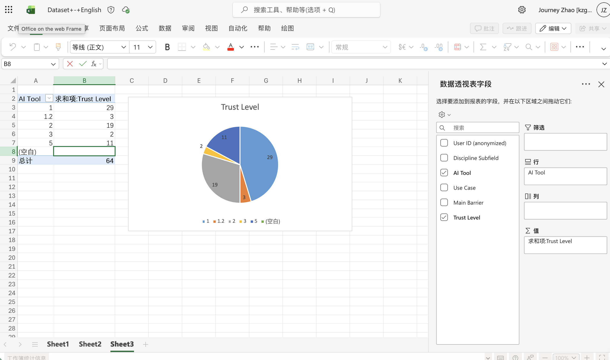

02 / REFLECTION
Weekly reflections.
To record my learning, ideas and reflections throughout the Digital Practice studies.
Contents
Open weekly directory
Week 2
WEEK 02 / REFLECTION
Week02 First workshop
It is interesting to create a piece of work and manage the operation logic. Actually, the course is a little bit similar to DW, which I learned during my postgraduate studies and that made my workshop easier to understand. However, I still made a funny mistake during the workshop which was that I forgot to press Save in VS Code. Well, at lease I will never do that again.
The world changes so fast. AI even could not write code when I was learning DW, and it could do that at lease one year ago cause I used AI to build up a questionnaire test during my internship. But I still need to amend some details because AI’s code could not run at all. So learning the rules of webpage making is still essential nowadays, because people should have the ability to type code just based on our brain and hand. At lease I should learn the establish logic even if I cannot do it.
↑ Back to contentsWeek 3
WEEK 03 / REFLECTION
Week03 Web Scraping
This week's task was a bit more complex than last week's. Web scraping was entirely new to me, so understanding the logical process was challenging. However, after completing the entire process, the principles of web scraping became much clearer.
 ↑ Back to contents
↑ Back to contents
Week 4
WEEK 04 / REFLECTION
Week04 Data Collection
We had our first group experience this week, and I was lucky to find some interesting group members.
In the process of collecting data, It is common to meet some moral and ethical problems. I think the most important issue is the question of "permission." Whether to accept the use of one's data is a very personal matter: someone cares and someone doesn’t. We’re not sure about if the users are willing to allow researchers to collect their data. So whether we can collect someone's data may depend on whether they agree with the platform's rules, but perhaps they will not stop using the platform. Users and platforms may be somewhat dissatisfied with each other, but they continue to cooperate.
During the discussions in the workshop, our group members have talked about some special sences like disability. It seems that disability is not related to the usage of AI, but I think it deserves to discussed in order to access the situation of blind and deaf-mute individuals because AI can help them to a greater extent. We haven't finalized the keywords yet, so that is just an idea. I've started gathering data on specific topics from the website, hoping to present it smoothly during the workshop next week.
↑ Back to contentsWeek 5
WEEK 05 / REFLECTION
Week05 Data Visualization
We had a really meaningful discussion this week. During the period of the group work last week, we thought that we had a comprehensive consideration. But we found the weakness in data categories and reduction. We opted to too many kinds of AI but some of them are not widely used in the British university students, so we cannot find the truly useful information from the numerous scraping results. On the other hand, decisions about data selection should be made after realizing that certain AI applications are not widely used.
Data visualization is not unfamiliar to me. I’ve used it in past studies and work, but pivot tables are a relatively new method, and this attempt was quite interesting.

↑ Back to contents